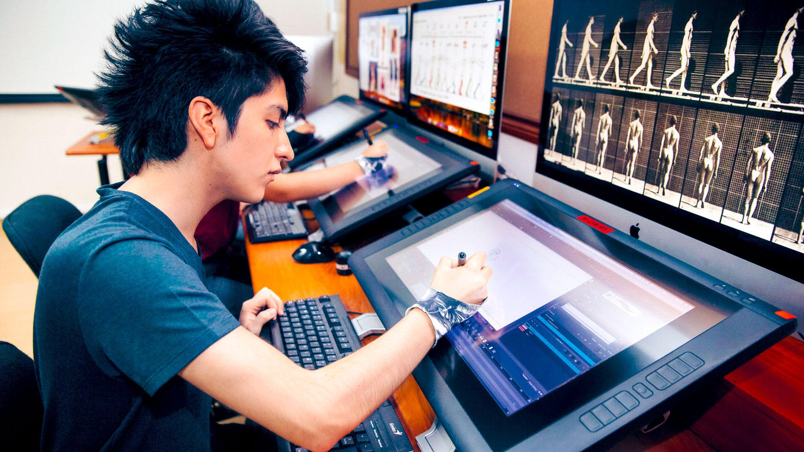

Sobre Nosotros
En Estudio Eclipse somos un grupo de artistas apasionados por la animación, la ilustración y la creación de historias visuales. Nos inspira el misterio, la imaginación y el poder de contar historias que conecten con los jóvenes. Nuestro nombre surge de la idea de que incluso en la oscuridad puede surgir la creatividad, como un eclipse que revela una nueva luz.
Trabajamos en proyectos que van desde cortos animados hasta webcómics originales. Cada ilustración o animación está pensada para despertar emociones y reflejar mundos donde la fantasía y la ciencia ficción se mezclan con la realidad.
Nuestra Filosofía
Creemos que el arte tiene el poder de inspirar, cambiar perspectivas y conectar corazones. Por eso, cada trazo, cada movimiento y cada historia busca transmitir algo más que solo belleza visual: buscamos contar historias con alma.

Nuestro Equipo
El estudio está formado por ilustradores, animadores, diseñadores y narradores visuales que colaboran en cada etapa del proceso creativo. A continuación, te presentamos a algunos de los integrantes principales:
- ✨ María Paz – Directora creativa y artista conceptual.
- ✨ Marco Brindis – Diseñador de personajes y fondos.
- ✨ Kenya Pardo – Animadora 2D y especialista en efectos visuales.
- ✨ Leydi Arias – Guionista y desarrollador de historias.
Nuestra Misión
Inspirar a nuevas generaciones de artistas a través de proyectos visuales que transmitan emociones, imaginación y autenticidad. Queremos que cada persona que vea nuestro trabajo sienta la magia de un eclipse creativo.